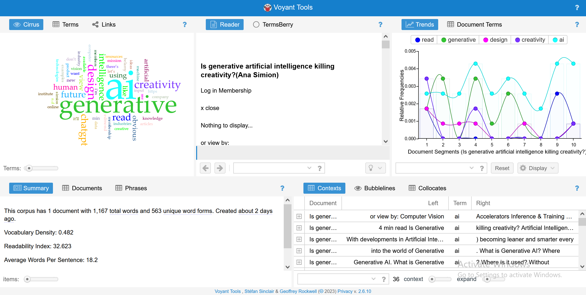

Lab Task 1: Using Voyant-tools to Explore Textual Content
For this task I entered the URL of the first article I studied in the IL task which produced these results:

- Perhaps unsurprisingly, the part that stands out most here to me is the word cloud. More specifically, the lack
of any negative words in the 75 most used on the website. The most popular words (outside the of the ones used
in the article's question) are asperational: "future", "vision", "want", "new" etc.
- The articles limited use of jargon is also very apparent from the word cloud and fits with my prior observations
- Similarly the lack of sources used is also obvious, as with more citations we would see a lot more years,
names or page numbers (depending on the style used).
Lab Task 2: Update your Moodboard and Website
For this task I made sure my website and moodboard were up-to-date with the last few
weeks worth of work and findings.